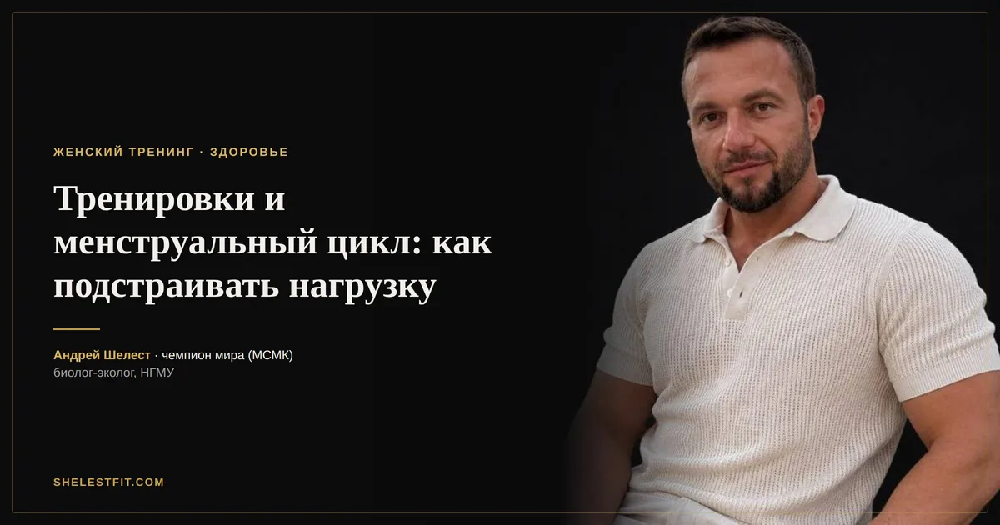

Тренировки и менструальный цикл: как подстраивать нагрузку по фазам
12 августа 2026 · Андрей Шелест

Тема тренировок с учётом менструального цикла в последние годы обросла как реальными исследованиями, так и упрощёнными схемами в духе «в эту неделю только лёгкое кардио». Разберу честно: что действительно показывают данные, а что — красивая теория поверх небольшой и разнородной доказательной базы.
Что показывают исследования
Доказательная база здесь моложе и слабее, чем, например, по креатину или сну. Часть исследований находит небольшое преимущество в силовых показателях в фолликулярную фазу (первая половина цикла), связанное с более низким уровнем прогестерона и более благоприятным гормональным фоном для восстановления. Но эффект небольшой, воспроизводится не во всех работах, и индивидуальные различия между людьми обычно перекрывают эту среднюю тенденцию.
Практический вывод: относитесь к этим данным как к вероятности, а не к закону. У части людей паттерн будет отчётливым, у части — почти незаметным.
Фолликулярная фаза: что типично отмечают
Первая половина цикла, начиная с первого дня месячных до овуляции. Часть исследований и субъективных отчётов указывает на лучшую переносимость высокой интенсивности и более быстрое восстановление между тренировками в этот период.
Лютеиновая фаза: что типично отмечают
Вторая половина цикла, после овуляции. Здесь чаще отмечают небольшое повышение температуры тела, задержку жидкости и у части людей — более высокое субъективное восприятие усилия при той же объективной нагрузке. Это не значит «тренироваться нельзя», это значит, что тот же вес может ощущаться немного тяжелее.
Практический подход, а не догма
Самый рабочий метод — не подстраиваться под усреднённые рекомендации из интернета, а вести простой дневник 2-3 цикла: фаза, самочувствие, рабочие веса, субъективное ощущение усилия. Через пару месяцев станет видно, есть ли у вас лично устойчивый паттерн — и если есть, корректировать программу точечно под него, а не «на всякий случай» под общую схему.
У большинства людей базовая программа силовых может оставаться одной и той же весь цикл, с небольшими поправками по самочувствию, а не с перестройкой заново каждые две недели.
Чего делать не стоит
Не стоит полностью выбрасывать силовые в «трудную» фазу — это не подкреплено данными как обязательная мера, и чаще просто тормозит общий прогресс. И не стоит списывать на цикл любой неудачный тренировочный день — иногда это правда цикл, а иногда просто плохой сон или недоеденный белок накануне.
Автор: Андрей Шелест, тренер, чемпион мира (МСМК). Биолог-эколог, окончил Новосибирский государственный медицинский университет, специализация «экология человека».
Это ознакомительный материал, а не индивидуальная рекомендация. Схему под ваши анализы и цели я подбираю персонально.